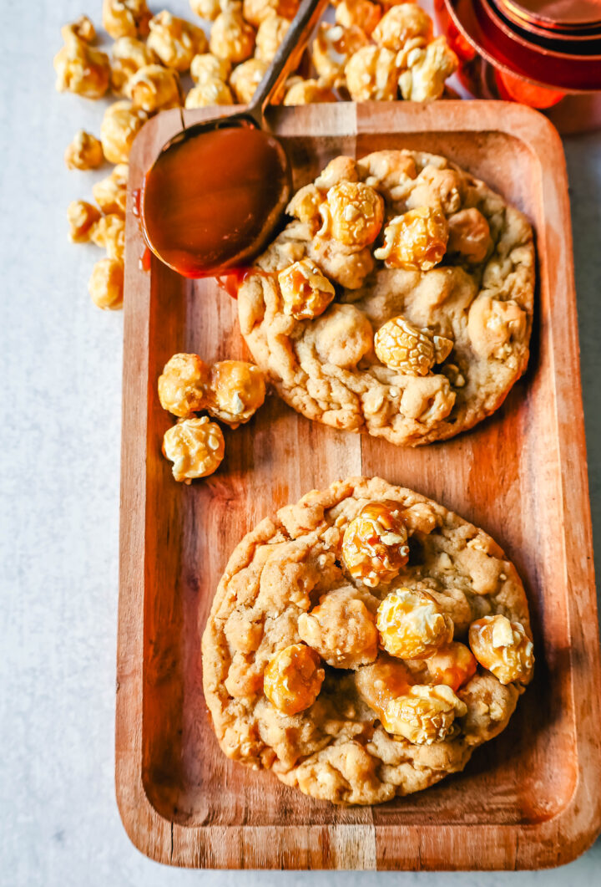

Caramel Popcorn Cookies

Caramel Popcorn Cookies are made with brown sugar cookie dough with chewy, crunchy, caramel popcorn pieces all throughout the cookie. If you love caramel, you are going to love these Caramel Corn Cookies!
The first time I made them, I was shocked because they were crunchy and sweet and chewy and had the best buttery caramel flavor. These Caramel Corn Cookies are out of this world!
Ingredients
- 1 cup Butter (softened)
- 1 cup Brown Sugar
- ⅓ cup Sugar
- 1 large Egg
- 1 Egg Yolk
- 2 teaspoons Vanilla Extract
- 2 ⅓ cups Flour
- 1 teaspoon Baking Soda
- ½ teaspoon Baking Powder
- ¾ teaspoon Salt
- 4 to 6 * cups Caramel Corn (see notes)
Steps
- In a large bowl, cream together butter, brown sugar, and sugar for 4 minutes. scrape the sides of the bowl, halfway through the time to ensure even mixing. This helps to give the butter time to coat the sugar crystals to create a smooth and creamy cookie texture
- Add egg, egg yolk, and vanilla and mix for 1 minute longer.
- Fold in flour, baking soda, baking powder, and salt. Add in 4 cups of caramel corn and mix for about 30 seconds to 1 minute to help break up some of the caramel corn into smaller pieces.
- Cover and chill in the refrigerator for 15-30 minutes. Preheat oven to 350 degrees. Line light-colored baking sheets with parchment paper. Drop cookie dough onto baking sheet and make sure to spread them apart in case of spreading.
- Top each cookie dough ball with a few caramel corns. Bake at 350 degrees for 11-14 minutes.
- When you remove them from the oven, if the cookies have spread, take a spatula and carefully press the edges of the cookie towards the center to shape it into a circle. To make the cookies look extra gourmet, add a few more caramel corn balls on top of the cookies. For an extra salty-sweet cookie, sprinkle with sea salt flakes.